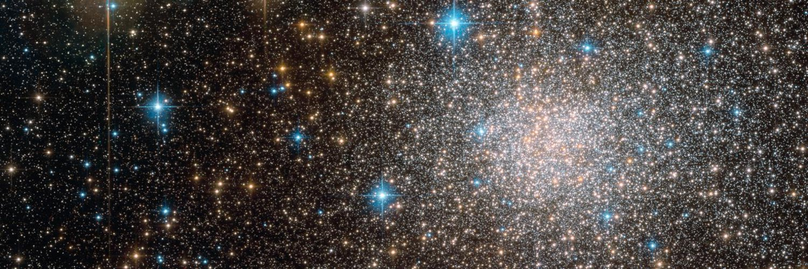

ArtPop¶
Artificial Stellar Populations — ArtPop — is a
Python software package for synthesizing stellar
populations and simulating realistic images of stellar systems. The code is designed to be
intuitive and as modular as possible, making it possible to use each of
its functionalities independently or together.